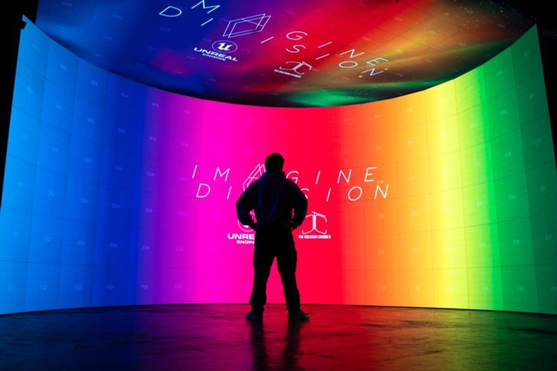
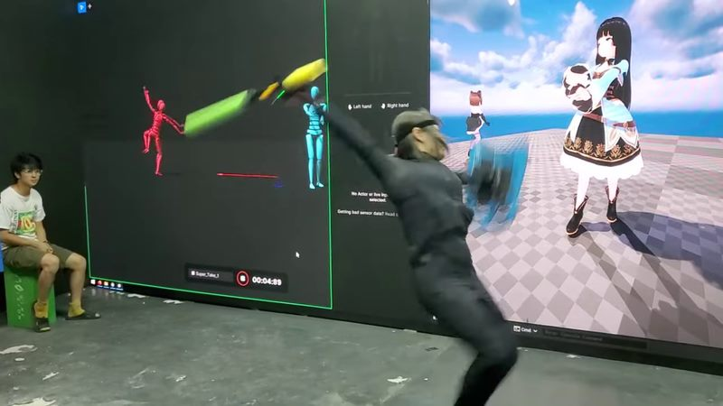
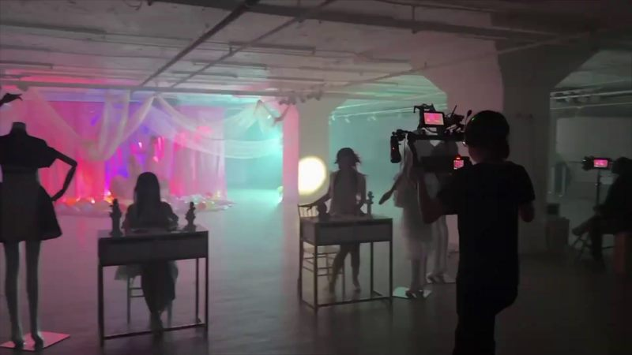
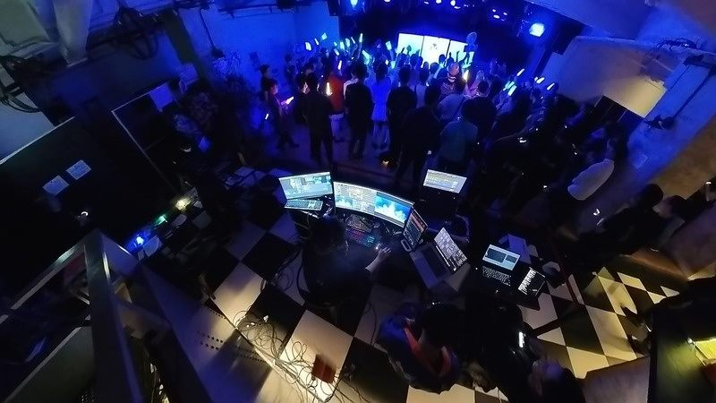

虛擬製作
鏡內視覺特效（ICVFX）、LED 牆、nDisplay、攝影機追蹤、鏡頭校正、OCIO、同步鎖相、時碼及即時合成。
我的工作不只是一個畫面，也不只是一套系統；重點是讓攝影機追蹤、同步、延遲、色彩、控制室與現場團隊能夠穩定配合。
鏡內視覺特效（ICVFX）、LED 牆、nDisplay、攝影機追蹤、鏡頭校正、OCIO、同步鎖相、時碼及即時合成。
動作捕捉、虛擬攝影機、NDI 媒體管線、直播系統，以及為 VTuber 和虛擬活動而設的影像化演出流程。
活動視覺系統、投影映射、vMix、Resolume、Dante、燈光控制、製作網絡和自訂軟件。
虛擬製作
我研究高解像 LED 面板、處理實體搭建與吊掛、設定渲染節點和製作網絡，再將 Unreal Engine、nDisplay、攝影機追蹤及鏡頭校正接成一套可用的製作棚流程。
電影、活動工程和軟件工程之間的交界，就是我製作工作的主線。
查看完整作品
按解決的製作問題分組，而不是只用單一職銜分類。

為 VTuber 與虛擬藝人建立現場流程，把動作捕捉資料、Unreal Engine、媒體伺服器、NDI 串流和低延遲流程接在一起。

以攝影指導、攝影助理、燈光師、剪接、視覺特效及動態圖像等角色參與商業項目和音樂錄像製作。

現場影像混合、投影映射、LED 顯示、串流、音頻、燈光，以及企業活動和音樂節的控制流程。
「作品從來不只是畫面，亦不只是系統；真正要做的是令兩者穩定到足夠讓人放心創作。」NoodleDoStuff 作品集方向